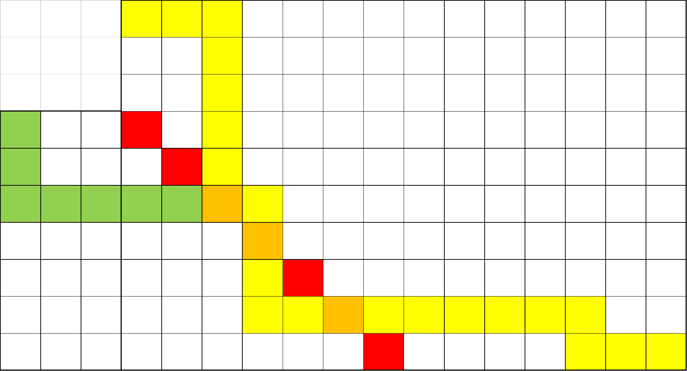

组合数
几个公式。
i=r∑n(ri)=(r+1n+1)
考虑组合意义。
i=0∑k(ia)(k−ib)=(ka+b)
清仓甩卖我杀了你。
k=0∑n(ak)(bn−k)=(a+b+1n+1)
虽然不是上课讲的，但是想起来了就写一下吧，鬼知道明年会不会还有封印（seal）甩卖（sale）
(mn)≡(⌊m/p⌋⌊n/p⌋)(mmodpnmodp)(modp)
妈妈生的。
容斥原理
算了吧，都整理到这里得了。
斯特林数
第一类斯特林数
将 n 个球分成 k 个不区分的轮换的方案数。
[nk]=[n−1k−1]+(n−1)[n−1k]
考虑新的放在每一个后面都是一种情况。
n!=i=1∑n[ni]
一个排列就是一堆轮换。
对一行的生成函数：
Fn(x)=i=0∑n[ni]xi
由递推式不难得出：
Fn(x)=xFn−1(x)+(n−1)Fn−1(x)
因此容易得到 Fn(x)=xnˉ。
首先把最大值找出来，他是前后缀最大值的交汇处。
考虑一个前缀最大值到下一个前缀最大值之前的位置，将这些位置归为一组，那么就总共有 A+B−2 组，因此原问题就相当于把排列分成若干组，每一组中找出最大值必须放在最前面，剩下的任意。在划分以后，组的顺序是固定的，也就相当于不考虑顺序，因此这个东西就相当于一个第一类斯特林数。又因为分出来的组里要选 A−1 个到前面来，所以就再乘一个组合数。
第二类斯特林数
分成集合，没有顺序的方案数。
第一次使用第二类斯特林数的时候我还不知道这是第二类斯特林数。
{nk}={n−1k−1}+k{n−1k}
由于不关心顺序，放到 k 个里面都是可以的。
{nk}=i=1∑m(−1)i(mn)in
容斥。考虑钦定几个空的，二项式反演。
上升幂、普通幂和下降幂
一些恒等式。
xnˉ=k=0∑n[nk]xk
就是生成函数。
xn=k=0∑n{nk}(−1)n−kxkˉ
斯特林反演。（虽然实际上是这个推出的斯特林反演，但是推导太困难了。）
xn=k=0∑n{nk}xk
可以归纳证明。
引理：x×xk=xk + 1+k×xk
直接代数推导容易证明。
把上面的式子左右两边乘以 x，凑一下形式就可以证明了。
当然，实际上也可以通过组合意义证明。左边就相当于是把 x 个球放进 n 个盒子里的方案数。右边就是先有顺序地选出几个盒子，然后把所有的球分进这些盒子里。
xn=k=0∑n[nk](−1)n−kxk
还是斯特林反演。
啥阴啊。没有任何组合意义的给定多项式看上去没有什么优化空间，因此普通指数多项式肯定是白搭了。
考虑把多项式转化为下降幂多项式 b，那么推导一下式子，得到：
LHS=k=0∑ni=0∑mbi×ki×xk×(kn)=i=0∑mbik=0∑nki×xk×(kn)=i=0∑mbik=i∑nni×xk×(k−in−i)=i=0∑mbi×ni×xik=i∑nxk−i(k−in−i)=i=0∑mbi×ni×xi×(1+x)n−i
我靠这是怎么想到的。
一个小的注意就是下降幂这个玩意的定义就实际上对求和的下界做了调整。
考虑推式子，设抽到的概率为 p，则大概就是要处理这样一个式子：
i=0∑nik(in)pi(1−p)n−i
考虑把 ik 转化成下降幂，得到：
=====i=0∑n(in)pi(1−p)n−ij=0∑k{kj}iji=0∑n(in)pi(1−p)n−ij=i∑k{kj}j!(ji)i=0∑nj=i∑kj!{kj}pi(1−p)n−i(in)(ji)j=0∑kj!{kj}(jn)i=j∑n(i−jn−j)pi(1−p)n−ij=0∑kpjj!{kj}(jn)i=0∑n−j(in−j)pi(1−p)n−i−jj=0∑kpjj!{kj}(jn)
其他技巧
Bell 数
整数划分的方案数。
Bn=k=0∑n(kn)Bk
卡特兰数
括号序列数。
H0=1,H1=1
Hn=i=1∑nHi−1Hn−i
Hn=(n2n)−(n−12n)=n+11(n2n)
经典问题
网格走路
限制一条主对角线
从 (0,0) 走到 (n,m)，只能向下或者向右，不能经过 y=x−b，求方案数。
考虑用全部减去不合法的。对于一条不合法的路径，找出他第一次经过直线的位置，把从起点到这个位置的路径沿直线对称，会发现恰好对应了所有的将起点对称过去以后的路径。

大概就是长这样，因此只需要两个组合数相减就行了。特别地，当 b=1 的时候这个东西就是卡特兰数。注意，这个有可能无解。
限制两条主对角线
不能经过 y=x−b 和 y=x+c。
如果按照刚才的办法，把两个都减掉肯定会算重，那么考虑容斥。
也就是先按照 l1 对称，过去以后再按照 l2 对称，如此往复，可以得到最终答案，这个通常叫做反射容斥。其原因就是，对称的时候，是第一次到达 l1 之前的路径被翻转了，但是这里并没有规定其是否到达过 l2，于是容斥掉这种情况。
限制起终点连线
不能经过 y=nmx−1。保证互质。
也可以转化一下题意，走对角线，但是走的步长发生变化。
考虑找到路径在连线方向下的最低点。由于 n,m 互质，最低点一定是唯一的（每条直线最多有一个整点，不考虑起终点），而根据那个括号序列的所有轮换只有一个合法的引理不难得出，只有当这个最低点轮换到起点的时候才是合法的，因此答案就是 n+m1(nn+m)。
比较巧妙。首先看到一大堆区间最值就考虑笛卡尔树，两个序列本质相同就等价于他们的笛卡尔树相同，而本质不同的序列和笛卡尔树是一一对应的，因此考虑数笛卡尔树。
一棵笛卡尔树对应一个值域为 [1,m] 的序列，等价于其最长左链长度小于 m。
对二叉树的计数可以转为对括号序列计数。考虑将括号序列构造为 (L)R，那么左链的限制就相当于是任意时刻栈里的左括号不超过 m 个，也就是同时要求两条线段，也就是刚才网格走路的限制两条对角线情况。
我怎么感觉好像推式子有他自己的优势，就是你可以不需要携带脑子，把所有的可能的方向都试一遍，记住那句话：球总会进的——某胡姓男子（只有最后一句是他说的）
但是现在不考虑这个，思考容斥。
首先这个恰好 k 就很不可做，容斥掉这个，考虑钦定 k 个上升。
然后卡了我半天的一点就来了：这个怎么数？考虑一堆连在一起的上升，相当于给一块规定了一个顺序，那么就是相当于第二类斯特林数，但是第二类斯特林数的和不好直接求，考虑写出来通项，发现这个东西恰好是个卷积的形式，NTT 卷出来。完事之后下一个还是求和，再卷出来。
上一个题的二维升级版。
首先考虑 fi,j 表示两个分别钦定了 i 和 j 个上升的方案数，二项式反演加上一个前缀和优化可以做到 O(n3)。
然后考虑如何求 f。观察一下性质，原排列的一个连续上升段在逆排列中的位置也是单调递增的，并且观察一下还会发现，显然在原排列的几个数在逆排列上的值是一个连续段。
考虑设一个矩阵 ci,j 表示原排列钦定出来的第 i 个上升段对应到逆排列的第 j 个上升的元素个数。注意到由于值域连续，这些值在逆排列的上升段上中间不能有别的元素，因此他必然是在两个排列上都是值域连续段。
考察一个合法的矩阵 c 是什么样子的。他的第 i 行的行和对应着原排列第 i 个上升段的长度，第 j 行对应着逆排列第 j 个上升段的长度，因此要求两个都要非空，同时要求矩阵的总和为 n。同时，一个 c 可以唯一构造出一个合法的排列，构造方式就是顺着排连续段，于是就可以直接对 c 计数。
设 gi,j 表示大小为 i×j 的矩阵的个数，然后继续容斥，只考虑总和为 n 的话，这个问题就相当于是个往盒子里面放小球，然后枚举空集数量二项式反演。和上面一样，前缀和优化以后可以做到 O(n3)。
不难写个 DP 出来，说是设一个子树用掉的值域集合，但是这玩意一眼需要子集枚举，直接叉掉。
考虑设 fi,j 表示 i 子树，其中 i 标号为 j 的方案数，直接不管排列的限制硬做。
但是这样会算重，于是考虑容斥。在外层枚举可用的集合，钦定只能选这个集合里面的值，最后容斥掉即可。
DAG 计数
对 n 个点的 DAG 计数。
设 fi 表示大小为 i 的 DAG 数量。考虑剥掉入度为 0 的点（当然 DAG 的反图还是 DAG，所以入读也无所谓），然后剩下的就是一个小的 DAG。
那么钦定 j 个点是入度为 0 的点，这些点和剩下的点可以随便连边，那么就不难得到容斥：
fi=j=1∑i(−1)j−1(ji)2j(i−j)fi−j
希望大家永远忘了我。
👆出题人的母亲还好吗？👆
强连通不好计数，因为强连通是个连接非常紧密的东西，考虑正难则反，如果他不是强连通图，那么缩点以后应该是个 DAG，所以只要对 DAG 进行计数就好了。设 f